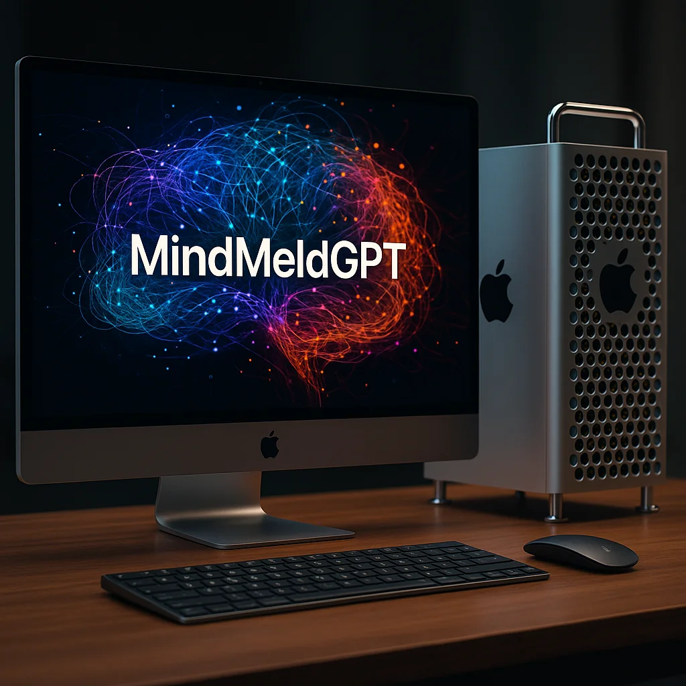

MindMeldGPT Ships!

Discover MindMeldGPT: a sovereign, modular, local-first LLM platform for advanced intelligence workflows. Click the image to explore the full details and architecture.
AI Reality Check: The Reflective Engine
The Reflective Engine represents a revolutionary collaboration in creativity and design by using a reflection and tuned persona that complements its human colleague.
AI Reality Check: Humanizing AI and ML
A speech delivered at Customer Contact Week advocating for human- and customer-first, thoughtful and creative application of AI and ML.
Project Gallery
Explore featured images from all AI Reality Check projects, including AI Sauces, creative work, portfolio pieces, and more. Filter by repository and view high-resolution versions.